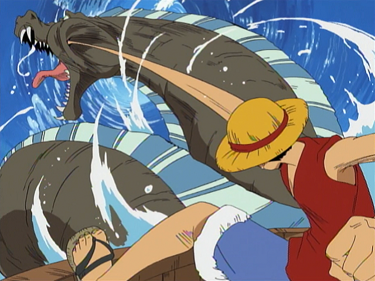

About Luffy
A pirate who wants to be the king of the pirates, because the king of the pirates is the most free person in the world.
He ate the Gomu Gomu no Mi as a child, which turned his body into rubber with the drawback of losing his strength when he encounters a body of water, which as a pirate in a world that has even more water than Earth, makes things difficult.
Luffy's characteristics
Carefree.
Cares deeply for his friends.
Even though he is a pirate he has a strong sense of justice and wants to fix any injustice he sees.
Grew up fighting strong animals and bandits, making him quite strong, and has the ability to quickly adapt in combat and from his losses, allowing him to overcome powerful foes.
Has the natural ability to make others into his allies, which makes the corrupt World Government greatly fear him.
Wears his characteristic Straw Hat that he got from his idol Shanks at all times, and protects it with his life, as he promised to return it one day.

This is Luffy in action
Luffy's Friends
Straw Hat Pirates:
Roronoa Zoro
Nami
Usopp
Sanji
Tony Tony Chopper
Nico Robin
Franky
Brook
Jinbe
Allies:
Nefertari Vivi
Heart Pirates
Kozuki Family
Mink Tribe
Riku Family
Elizabello II
Shanks
Companions:
Zeus
Karoo
Ships:
Going Merry
Thousand Sunny
Beautiful Pirates. Represented by Cavendish
Barto Club. Represented by Bartolomeo
Happo Navy. Represented by Sai
Ideo Pirates. Represented by Ideo
Tontatta Pirates. Represented by Leo
New Giant Warrior Pirates. Represented by Hajrudin
Yonta Maria Grand Fleet. Represented by Orlumbus